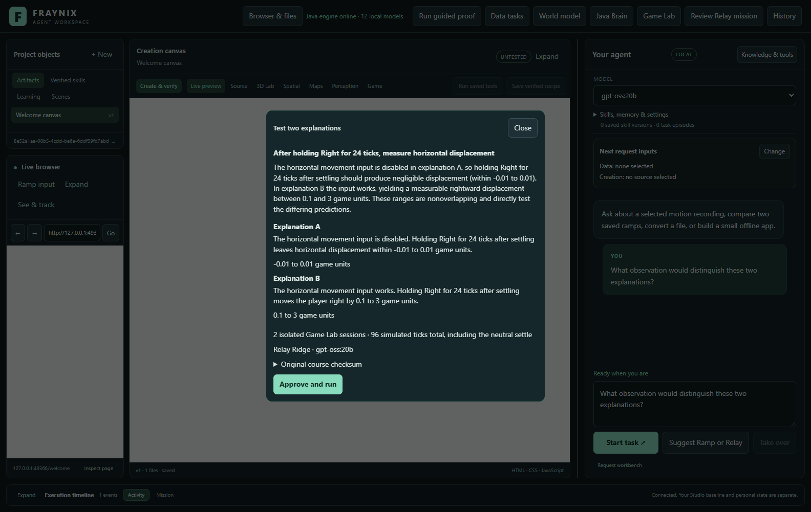
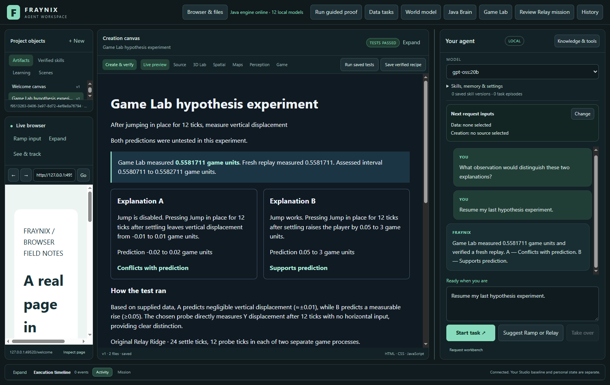

Test two competing explanations
A local model suggests one observation to distinguish two Game Lab explanations. You review its predictions and budget before Java runs the original course, replays it and reports the result.

A pending review shows the local model’s proposal, predicted ranges and runtime budget
Fraynix shows a measured horizontal displacement and separate verdicts

Fraynix chooses a vertical measurement for the Jump question
System files
Open source